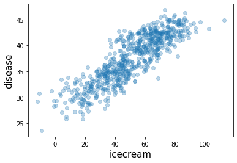
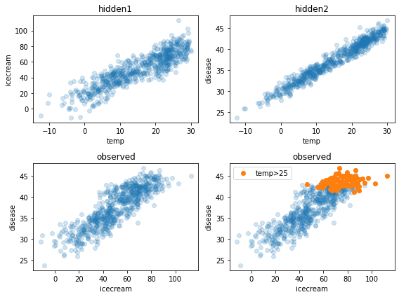
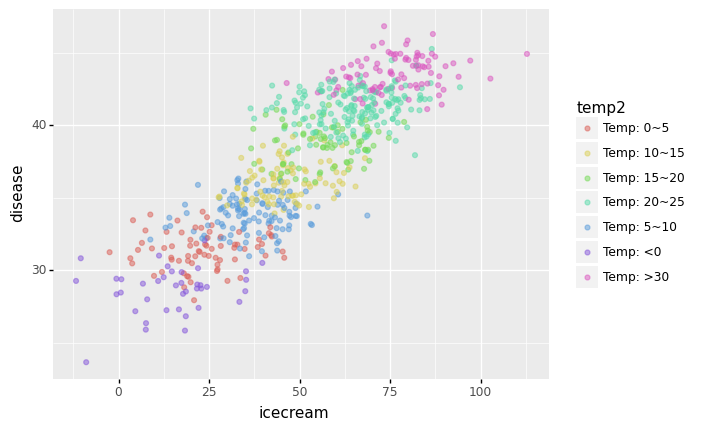
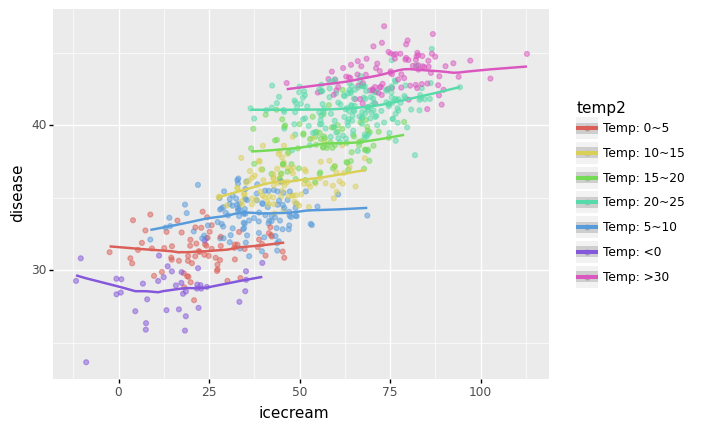
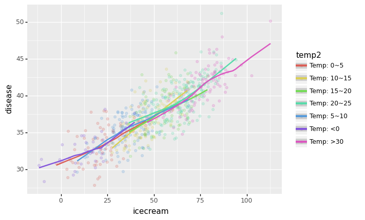

07wk-2
아이스크림을 많이 먹으면 걸리는 병(2)
강의영상
https://youtube.com/playlist?list=PLQqh36zP38-yQH8dZfxHgxiFZr-FL50NU
imports
아이스크림을 많이 먹으면 걸리는 병 (2)
자료생성: 좀 더 그럴듯한 자료 (만들기)
- 지난 시간의 toy example은 데이터가 너무 작아서 억지스러움 \(\to\) 기상자료개방포털, 회원가입해야 자료받을 수 있음.
| 지점번호 | 지점명 | 일시 | 평균기온(℃) | 최고기온(℃) | 최고기온시각 | 최저기온(℃) | |
|---|---|---|---|---|---|---|---|
| 0 | 146 | 전주 | 2020-01-01 | -0.5 | 4.3 | 15:09 | -6.4 |
| 1 | 146 | 전주 | 2020-01-02 | 1.4 | 6.5 | 14:12 | -3.0 |
| 2 | 146 | 전주 | 2020-01-03 | 2.6 | 7.6 | 13:32 | -0.5 |
| 3 | 146 | 전주 | 2020-01-04 | 2.0 | 7.7 | 13:51 | -2.6 |
| 4 | 146 | 전주 | 2020-01-05 | 2.5 | 8.6 | 14:05 | -3.2 |
| ... | ... | ... | ... | ... | ... | ... | ... |
| 651 | 146 | 전주 | 2021-10-13 | 19.9 | 25.5 | 14:29 | 15.6 |
| 652 | 146 | 전주 | 2021-10-14 | 20.4 | 25.5 | 13:36 | 17.0 |
| 653 | 146 | 전주 | 2021-10-15 | 18.3 | 22.0 | 13:47 | 15.7 |
| 654 | 146 | 전주 | 2021-10-16 | 12.8 | 17.4 | 0:01 | 6.5 |
| 655 | 146 | 전주 | 2021-10-17 | 6.7 | 12.4 | 15:18 | 2.2 |
656 rows × 7 columns
- 평균기온만 선택
# 숨은진짜상황1: 온도 \(\to\) 아이스크림 판매량
- 아래와 같은 관계가 있다고 하자.
\[\text{아이스크림 판매량} = 20 + 2 \times \text{온도} + \epsilon\]

# 숨은진짜상황1: 온도 \(\to\) 아이스크림 판매량
- 아래와 같은 관계가 있다고 하자.
\[\text{소아마비 반응수치} = 30 + 0.5 \times \text{온도} + \epsilon\]

# 우리가 관측한 상황 (온도는 은닉되어있음)
plt.plot(icecream,disease,'o',alpha=0.3)
plt.xlabel("icecream",size=15)
plt.ylabel("disease",size=15)Text(0, 0.5, 'disease')
- 0.86정도..
직관: 여름만 뽑아서 plot 해보자.
- temp>25 (여름으로 간주) 인 관측치만 플랏
- 전체적인 산점도
fig , ((ax1,ax2), (ax3,ax4)) = plt.subplots(2,2,figsize=(8,6))
ax1.plot(temp,icecream,'o',alpha=0.2); ax1.set_xlabel('temp'); ax1.set_ylabel('icecream'); ax1.set_title("hidden1")
ax2.plot(temp,disease,'o',alpha=0.2); ax2.set_xlabel('temp'); ax2.set_ylabel('disease'); ax2.set_title("hidden2")
ax3.plot(icecream,disease,'o',alpha=0.2); ax3.set_xlabel('icecream'); ax3.set_ylabel('disease'); ax3.set_title("observed")
ax4.plot(icecream,disease,'o',alpha=0.2); ax4.set_xlabel('icecream'); ax4.set_ylabel('disease'); ax4.set_title("observed")
ax4.plot(icecream[temp>25],disease[temp>25],'o',label='temp>25')
ax4.legend()
fig.tight_layout()
ggplot: 온도구간을 세분화 하여 시각화
- 목표: 모든 온도구간에 대하여 각각 색을 다르게 하여 그려보자.
- 사실 지금 변수는 온도, 아이스크림판매량, 소아마비
- 온도가 유사한 지역을 색으로 묶으면 3차원 플랏이 가능함
# df로 자료정리
- 일단 데이터 프레임을 정리하자.
| temp | icecream | disease | |
|---|---|---|---|
| 0 | -0.5 | 35.243454 | 29.333242 |
| 1 | 1.4 | 16.682436 | 30.643733 |
| 2 | 2.6 | 19.918282 | 29.163804 |
| 3 | 2.0 | 13.270314 | 32.640271 |
| 4 | 2.5 | 33.654076 | 29.456564 |
| ... | ... | ... | ... |
| 651 | 19.9 | 68.839992 | 39.633906 |
| 652 | 20.4 | 76.554679 | 38.920443 |
| 653 | 18.3 | 68.666079 | 39.882650 |
| 654 | 12.8 | 42.771364 | 36.613159 |
| 655 | 6.7 | 30.736731 | 34.902513 |
656 rows × 3 columns
# 구간세분화
- 온도를 카테고리화 하자 \(\to\) 적당한 구긴을 설정하기 위해서 히스토그램을 그려보자.
(array([ 3., 9., 29., 60., 92., 86., 65., 93., 139., 80.]),
array([-12.4 , -8.16, -3.92, 0.32, 4.56, 8.8 , 13.04, 17.28,
21.52, 25.76, 30. ]),
<BarContainer object of 10 artists>)- 구간은 5정도로 하면 적당할 것 같다.
| temp | icecream | disease | temp2 | |
|---|---|---|---|---|
| 0 | -0.5 | 35.243454 | 29.333242 | Temp: <0 |
| 1 | 1.4 | 16.682436 | 30.643733 | Temp: 0~5 |
| 2 | 2.6 | 19.918282 | 29.163804 | Temp: 0~5 |
| 3 | 2.0 | 13.270314 | 32.640271 | Temp: 0~5 |
| 4 | 2.5 | 33.654076 | 29.456564 | Temp: 0~5 |
| ... | ... | ... | ... | ... |
| 651 | 19.9 | 68.839992 | 39.633906 | Temp: 15~20 |
| 652 | 20.4 | 76.554679 | 38.920443 | Temp: 20~25 |
| 653 | 18.3 | 68.666079 | 39.882650 | Temp: 15~20 |
| 654 | 12.8 | 42.771364 | 36.613159 | Temp: 10~15 |
| 655 | 6.7 | 30.736731 | 34.902513 | Temp: 5~10 |
656 rows × 4 columns
# ggplot
- 온도를 색으로 구분하면
fig = ggplot(data=df.assign(temp2 = list(map(cut,df.temp))))
p1 = geom_point(aes(x='icecream',y='disease',colour='temp2'),alpha=0.5)
fig + p1
- 추세선을 추가하면
/home/cgb4/anaconda3/envs/py37/lib/python3.7/site-packages/plotnine/stats/smoothers.py:311: PlotnineWarning: Confidence intervals are not yet implementedfor lowess smoothings.
- 각 온도별로 추세선은 거의 기울기가 0이다. \(\to\) 온도가 비슷한 구간별로 묶어서 보니까 상관관계가 없다는 거!
- 아이스크림 판매량과 소아마비의 corr은 유의미해보이지만, 온도를 통제하였을 경우 아이스크림 판매량과 소아마비의 partial corr은 유의미해보이지 않음.
# 해석
- 해피앤딩: 온도를 통제하니까 아이스크림과 질병은 관련이 없어보인다. \(\to\) 아이스크림을 먹으면 소아마비를 유발한다는 이상한 결론이 나올뻔 했지만 우리는 온도라는 흑막을 잘 찾았고 결과적으로 “온도->아이스크림판매량,소아마비” 이라는 합리적인 진리를 얻을 수 있었다.
- 온도와 같은 변수를 은닉변수라고 한다.
- 또 다른 흑막? 고려할 흑막이 온도뿐이라는 보장이 어디있지? 사실 흑막2, 흑막3이 있어서 그런 흑막들을 고려하다보니까 아이스크림과 소아마비사이의 상관관계가 다시 보이면 어떡하지?
- 이러한 이유 때문에 상관계수로 인과성을 유추하는건 사실상 불가능.
- 그런데 이론적으로는 “세상의 모든 은닉변수를 통제하였을 경우에도 corr(X,Y)의 값이 1에 가깝다면 그때는 인과성이 있다고 봐도 무방함, (물론 이 경우에도 무엇이 원인인지는 통계적으로 따지는것이 불가)” 이라고 주장할 수 있다. 즉 모든 흑막을 제거한다면 “상관성=인과성”이다.
- 실험계획법, 인과추론: 세상의 모든 흑막을 제거하는건 상식적으로 불가능
- 피셔의주장(실험계획법): 그런데 실험계획을 잘하면 흑막을 제거한 효과가 있음 (무작위로 사람뽑아서 담배를 피우게 한다든가)
- 인과추론: 실험계획이 사실상 불가능한 경우가 있음 \(\to\) 모인 데이터에서 최대한 흑막2,3,4,.. 등이 비슷한 그룹끼리 “매칭”을 시킨다!
그냥 궁금해서: 진짜 만약에 아이스크림과 소아마비가 관련있는 경우라면?
- 온도는 아이스크림 판매에 여전히 영향을 주지만
\[\text{아이스크림 판매량} = 20 + 2 \times \text{온도} + \epsilon\]
- 수영장이 원인이 아니라 진짜 아이스크림을 먹고 소아마비에 걸린상황이라면?
\[\text{소아마비 반응수치} = 30 + 0 \times \text{온도} + 0.15 \times \text{아이스크림 판매량} + \epsilon\]
df2=pd.DataFrame({'temp':temp,'icecream':icecream,'disease':disease})
df2.assign(temp2=list(map(cut,df2.temp)))| temp | icecream | disease | temp2 | |
|---|---|---|---|---|
| 0 | -0.5 | 35.243454 | 34.453002 | Temp: <0 |
| 1 | 1.4 | 16.682436 | 32.389832 | Temp: 0~5 |
| 2 | 2.6 | 19.918282 | 28.715350 | Temp: 0~5 |
| 3 | 2.0 | 13.270314 | 35.271089 | Temp: 0~5 |
| 4 | 2.5 | 33.654076 | 31.461240 | Temp: 0~5 |
| ... | ... | ... | ... | ... |
| 651 | 19.9 | 68.839992 | 39.693811 | Temp: 15~20 |
| 652 | 20.4 | 76.554679 | 38.924088 | Temp: 20~25 |
| 653 | 18.3 | 68.666079 | 41.765212 | Temp: 15~20 |
| 654 | 12.8 | 42.771364 | 36.842022 | Temp: 10~15 |
| 655 | 6.7 | 30.736731 | 37.715537 | Temp: 5~10 |
656 rows × 4 columns
ggplot(data=df2.assign(temp2=list(map(cut,df2.temp))))+\
geom_point(aes(x='icecream',y='disease',colour='temp2'),alpha=0.2)+\
geom_smooth(aes(x='icecream',y='disease',colour='temp2'))/home/cgb4/anaconda3/envs/py37/lib/python3.7/site-packages/plotnine/stats/smoothers.py:311: PlotnineWarning: Confidence intervals are not yet implementedfor lowess smoothings.
- 이번엔 partial corr도 유의미하게 나옴
- 단순 corr을 봐서는 “온도->아이스크림,소아마비” 인지, “온도->아이스크림->소아마비” 인지 알기 어렵다.
| temp | icecream | disease | |
|---|---|---|---|
| temp | 1.000000 | 0.884366 | 0.975609 |
| icecream | 0.884366 | 1.000000 | 0.862990 |
| disease | 0.975609 | 0.862990 | 1.000000 |
숙제
- 없습니다..